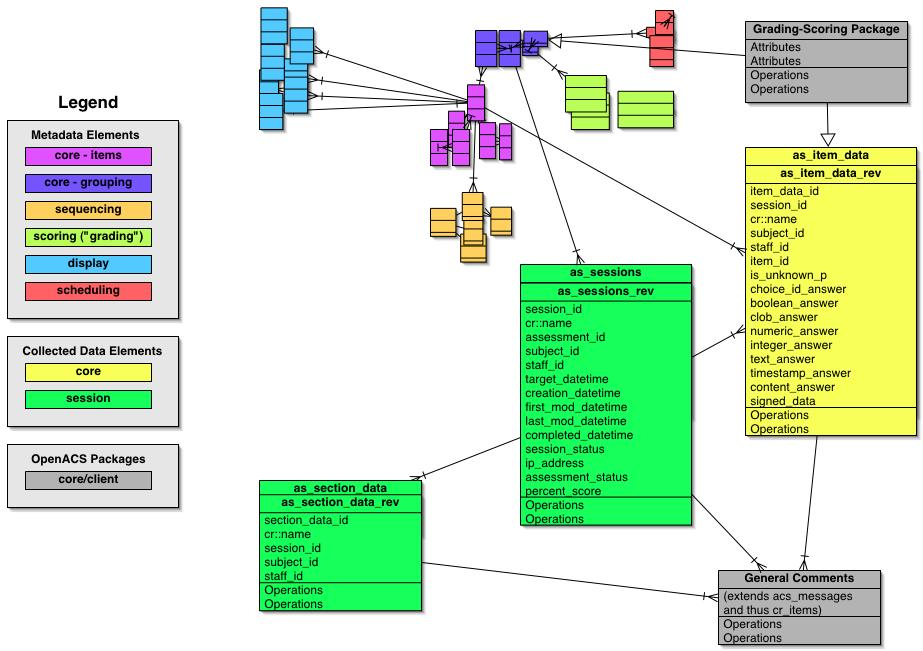

Overview
The schema for the entities that actually collect, store and retrieve
Assesment data parallels the hierarchical structure of the Metadata Data Model. In the antecedent
"complex survey" and "questionnaire" systems, this schema was simple
two-level structure:
- survey_responses which capture information about which
survey was completed, by whom, when, etc
- survey_question_responses which capture the actual user
data in a "long skinny table" mechanism
This suffices for one-shot surveys but doesn't support the fine
granularity of user-action tracking, "save&resume" capabilities,
and other requirements identified for the enhanced Assessment package.
Consequently, we use a more extended hierarchy:
- Assessment Session which captures information about
which Assessment, which Subject, when, etc
- Assessment Data which holds information about the status
of the entire Assessment (rolled up from the constituent parts)
- Section Data which holds information about the status of
each Section
- Item Data which holds the actual data extracted from the
Assessment's html forms; this is the "long skinny table"
To support user modification of submitted data (of which
"store&resume" is a special case), we base all these entities in
the CR. In fact, we use both cr_items and cr_revisions in our schema,
since for any given user's Assessment submission, there indeed is a
"final" or "live" version. (In contrast, recall that for any Assessment
itself, different authors may be using different versions of the
Assessment. While this situation may be unusual, the fact that it must
be supported means that the semantics of cr_items don't fit the
Assessment itself. They do fit the semantics of a given user's
Assessment "session" however.)
Note that all these entities derive from the CR, they are also all
acs_objects and thus automagically have the standard creation_user,
creation_date etc attributes. We don't mention them separately here.
Also, while this doesn't impact the datamodel structure per se,
we add an important innovation to Assessment that wasn't used in
"complex survey" or questionnaire. When a user initiates an Assessment
Session, an entire set of Assessment objects are created (literally,
rows are inserted in all the relevant tables as defined by the
structure of the Assessment). Then when the user submits a form with
one or more Items "completed", all database actions from there on
consist of updates in the CR, not insertions. (In contrast, the systems
to date all wait to insert into "survey_question_responses", for
example, until the user submits the html form.) The big advantage of
this is that determining the status of any given Item, Section or the
entire Assessment is now trivial. We don't have to see whether an Item
Data row for this particular Assessment Session is already there and
then insert it or else update it; we know that it's there and we just
update it. More importantly, all of our reporting UIs that show
Assessment admins the current status of users' progress through the
Assessment are straightforward.
We distinguish here between "subjects" which are users whose
information is the primary source of the Assessment's responses, and
"users" which are real OpenACS users who can log into the system.
Subjects may be completing the Assessment themselves or may have
completed some paper form that is being transcribed by staff people who
are users. We thus account for both the "real" and one or more "proxy"
respondents via this mechanism.
Note that we assume that there is only one "real"
respondent. Only one student can take a test for a grade. Even if
multiple clinical staff enter data about a patient, all those values
still pertain to that single patient.
One final note: we denormalize several attributes in these entities
--
event_id, subject_id and staff_id. The reason for putting these foreign
keys in each row of the "data" is to produce a "star topology" of fact
tables and dimension tables. This will facilitate data retrieval and
analysis. (Are there other dimension keys that we should include
besides these?)
Synopsis of Data-Collection Datamodel
Here's the schema for this subsystem:

Specific Entities
This section addresses the attributes the most important entities
have in the data-collection data model -- principally the various
design issues and choices we've made. We omit here literal SQL snippets
since that's what the web interface to CVS is for. ;-)
- Assessment Sessions (as_sessions) are the top of the
data-collection entity hierarchy. They provide the central definition
of a given subject's performance of an Assessment. Attributes include:
- session_id
- assessment_id (note that this is actually a revision_id)
- subject_id - references a Subjects entity that we don't
define in this package; presumably a table derived from Persons since
we need to be able to deploy Assessments to individuals who aren't
OpenACS users
- staff_id - references Users if someone is doing the
Assessment as a proxy for the real subject
- event_id
- target_datetime - when the subject should do the Assessment
- creation_datetime - when the subject initiated the
Assessment
- first_mod_datetime - when the subject first sent something
back in
- last_mod_datetime - the most recent submission
- completed_datetime - when the final submission produced a
complete Assessment
- signature_id - references optionial digital signature in
as_signatures
- session_status - tracks FSM
- ip_address
- Assessment Data (as_assessment_data) captures
information about the Assessment (NB this may overlap with
as_sessions). Attributes include:
- assessment_data_id
- session_id
- subject_id
- staff_id
- event_id
- assessment_id
- signature_id
- assessment_status
- Assessment Section Data (as_section_data) tracks the
state of each Section in the Assessment. Attributes include:
- section_data_id
- session_id
- event_id
- subject_id
- staff_id
- section_id
- signature_id
- section_status
- Assessment Item Data (as_item_data) is the heart
of the data collection piece. This is the "long skinny table" where all
the primary data go -- everything other than "scale" data ie calculated
scoring results derived from these primary responses from subjects.
Attributes include:
- item_data_id
- session_id
- event_id
- subject_id
- staff_id
- item_id
- signature_id
- item_status
- is_unknown_p - defaults to "f" - important to clearly
distinguish an Item value that is unanswered from a value that means
"We've looked for this answer and it doesn't exist" or "I don't know
the answer to this". Put another way, if none of the other "value"
attributes in this table have values, did the subject just decline to
answer it? Or is the "answer" actually this: "there is no answer". This
attribute toggles that clearly when set to "t".
- choice_id_answer - references as_item_choices
- boolean_answer
- clob_answer
- numeric_answer
- integer_answer
- varchar_answer
- text_answer
- timestamp_answer
- content_answer - references cr_revisions
- attachment_answer - may be redundant with content_answer (?)
- attachment_file_type
- attachment_file_extension
- Assessment Scale Data (as_scale_data) captures derived
data calculated from subjects' raw responses. Attributes include:
- scale_data_id
- session_id
- event_id
- subject_id
- staff_id
- scale_id
- assessment_id
- signature_id
- scale_score_status
- is_unknown_p
- numeric_value
- varchar_value - optional nominal or ordinal value
- Assessment Annotations (as_annotations) provides a
flexible way to handle a variety of ways that we need to be able to
"mark up" an Assessment. Subjects may modify a response they've already
made and need to provide a reason for making that change. Teachers may
want to attach a reply to a student's answer to a specific Item or make
a global comment about the entire Assessment. This mechanism provides
that flexibility, and is designed like the old general_comments system.
An argument could be made to use a generic OpenACS Comments system but
such doesn't exist now, and probably our uses here are specific enough
that it makes sense to have our own. Attributes include:
- annotation_id
- on_what_table
- on_what_id
- title
- text
- content_id - references cr_revisions
- signature_id
- Assessment Signatures (as_signatures): abstracts the
digital signatures mechanism from the data tables themselves.
Attributes include:
- signature_id
- subject_id
- staff_id
- on_what_table
- on_what_id
- reason
- signature - a hash of the primary datum encrypted with the
user's passcode